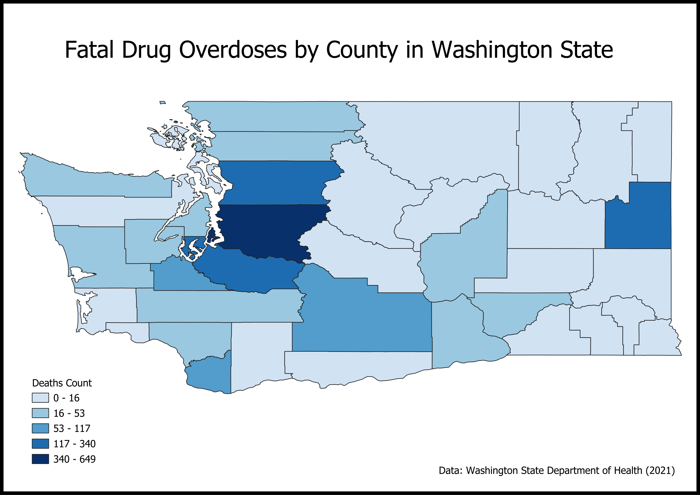

Fatal Drug Overdoses |
This map shows the spatial influences of fatal drug overdoses across counties in Washington State. It provides a visual representation on the problem that drug overdoses impose in specific areas and shows the regions with high concentrations of fatal overdoses. By examining the areas with different concentrations of fatal overdoses, a better understanding of the geographical disparities in this crisis is gained. Each county is color coded based on the count of fatal drug overdoses in 2021. Darker shades of blue indicate for higher death count, meaning these counties are experiencing higher fatalities due to drugs. The legend ranges from 0 to 649, providing a visual of the vast number of fatal drug overdoses across different counties. Taking a closer look at the visual, the areas with the highest concentrations of fatal drug overdoses are King, Pierce and Snohomish County, suggesting that these areas have the biggest overdose crisis. A factor that can potentially cause these counties to have a high counts of overdose rates is the distance to healthcare facilities in-order to receive proper treatment.